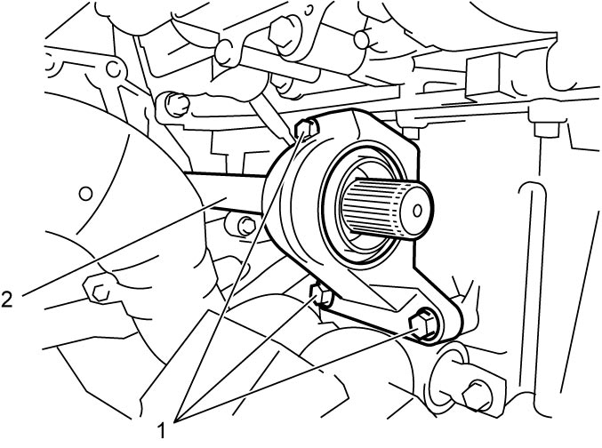

3A
| Drive Intermediate Shaft Assembly Removal and Installation (Diesel - 2WD Model) |
NOTICE:
Oil leakage will occur if the oil seal lip is damaged.
Do not pull out or push in the drive intermediate shaft at an angle. Slide the shaft in axial direction.
Removal
1)Drain transaxle oil. 
2)Remove right side front drive shaft assembly.
3)Remove intermediate support bolts (1) and drive intermediate shaft assembly (2) from transaxle.


 "Expand image")
Installation
Reverse removal procedure noting the following points.
•Use new snap ring.
•Tighten intermediate support bolts (1) in numerical order as shown in figure.
•Tighten intermediate support bolts (1) in numerical order as shown in figure.
 "Expand image")